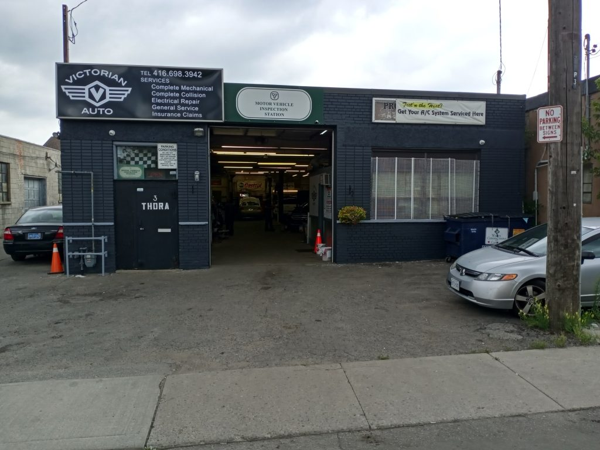

Auto repair shop · 3 Thora Avenue, Scarborough
Body work and mechanical repair at 3 Thora Avenue.
Victorian Auto Collision is an auto repair shop at 3 Thora Avenue in Scarborough, near Victoria Park and Danforth. The sign over the door lists complete mechanical and collision work, electrical repair, general service and insurance claims, and it marks the shop as a motor vehicle inspection station. Reviewers name Tony, Paul and Zack. Call or text (416) 698-3942.
- Collision repair
- Mechanical repair
- Safety inspections
- Insurance claims
- Victoria Park & Danforth
What the sign, and the reviews, describe
Collision and body work
The sign over the door lists “Complete Collision” and “Insurance Claims.” Fiona Ara had “a dent from a hit & run on our rear side panels” and wrote that Victorian Auto “completed the work on time and to perfection.” BNS Roofing was referred after other shops wanted to repaint a whole side; “Paul and Tony recommended repairing only the damaged door.” Robin- Tomlinson came in “after my front end and hood were damaged in a collision” and wrote that “the repairs were just as fast.”
Mechanical repair and inspections
The same sign lists “Complete Mechanical,” “Electrical Repair,” “General Service,” and a motor vehicle inspection-station plaque is on the building. A banner on the shop also offers air-conditioning service. Justin wrote, “I’ve always felt intimidated going to mechanics, but Tony made me feel right at home, like family.” hail said “Tony and his crew really pulled through for me” with “honest, practical, not to mention friendly service.” Google’s listing topics include safety inspection and safety certification.
A family shop reviewers keep coming back to
BNS Roofing wrote that “Paul and Tony run a real family business.” Chris has been going “for years and with multiple vehicles.” Iain, in a review copied by canadanear.com, found Tony and Paul “20 years ago” and wrote, “No one else touches my car.” Monica L, in a review copied by professionelle.ca, has been going “for 15 years.” Mark R., on the same directory, wrote that they “picked up and dropped off my car from my house when I was in a cast.”
Services above come from the shop’s own sign in Google listing photos (read 2026-11-19), from topics on the Google listing, and from reviews quoted in the reviews section. No prices are listed here. Call or text (416) 698-3942 if you have a question or want a quote.
3 Thora Avenue, Scarborough
A shop on Thora Avenue near Victoria Park and Danforth
Monday to Friday 8 a.m.–6 p.m. · Saturday 8 a.m.–1 p.m. · Sunday closed
Victorian Auto Collision is at 3 Thora Avenue, the address on the door and on Google today. Google lists it as an auto repair shop, with a 4.9 rating from 94 reviews as of Nov 19, 2026. Reviewers describe both body work and mechanical repair, and they mention Tony, Paul and Zack. Some directories still list a website, advancecollision.com, that currently leads to a different shop in Victoria, B.C.; this page does not use that address.
“I’ve always felt intimidated going to mechanics, but Tony made me feel right at home, like family. Super friendly, honest, and upfront about what needed fixing right away and what could wait.”
Justin, Google review, 3 weeks ago (as of Nov 19, 2026). Quoted as written.
What customers say
4.9 ★ from 94 Google reviews (checked Nov 19, 2026). Quotes are word for word. Each one says where it was read: on the Google listing itself, or on a public page that copies reviews. Google shows only a handful of reviews without signing in, so some quotes are reviews copied by the canadanear.com and professionelle.ca directories. Reviews that named a dollar amount are not shown here.
★★★★★
So happy I found this place! I’ve always felt intimidated going to mechanics, but Tony made me feel right at home, like family. Super friendly, honest, and upfront about what needed fixing right away and what could wait. Never felt pressured or taken advantage of. Such a great experience and honestly just a really good guy. Definitely found my new mechanic!
★★★★★
Great experience. We had a dent from a hit & run on our rear side panels, making us worry about future rust. Victorian Auto quoted us a fair price, completed the work on time and to perfection. From conversations with the owner it is clear that he know cars.
★★★★★
So thankful I’ve found a fantastic mechanic in the area! Tony and his crew really pulled through for me in my hour of need and gave me honest, practical, not to mention friendly service with flexibility and a great timeline. No nonsense, everything you need and nothing you don’t. I’ve had a couple negative experiences with mechanics lately, but Tony has restored my faith 🙏🏻
★★★★★
I had a great experience with this body shop. Tony is great and excellent.
The pricing was very reasonable, and they completed the repair in just two days, which saved me a lot of cost and time. The workmanship was excellent — the car looks great and you can tell they really care about quality.I would definitely recommend this shop to friends and family.
★★★★★
I’m writing this review to help others who may find themselves in the same situation I was in, dealing with dents and scratches on a personal vehicle and trying to navigate multiple repair quotes. I visited four to five auto body shops, and most of them provided extremely high estimates, attempting to upsell services that honestly didn’t seem necessary for the actual damage.
Thankfully, a close friend referred me to Victorian Auto Collision, and I can confidently say they are truly a hidden gem. Paul and Tony run a real family business in every sense of the word. From the moment they inspected my vehicle, they were transparent, honest, and straightforward about the scope of work required. There was absolutely no pressure or upselling.
While other shops insisted on repainting the entire side of the vehicle, Paul and Tony recommended repairing only the damaged door, explaining that anything more would simply be my choice, not a necessity. That level of integrity is rare.
From start to finish, the experience was seamless. The customer service was outstanding, and the quality of the repair exceeded my expectations. The door looked as if it had just come straight from the manufacturer.
I highly recommend Victorian Auto Collision to anyone looking for honest, high quality work. I will definitely be returning for any future auto body needs.
Thank you, Tony and Paul!
★★★★★
My wife and I have been going to Tony and the guys for years and with multiple vehicles. They’re incredibly knowledgeable and fair with pricing. I used to fear mechanics before Tony! Haha
★★★★★
Tony is great! Thank you so much for fixing up our old Kia Soul, it feels like a brand new car.
★★★★★
I had a very good experience here. Took my car for repairs after my front end and hood were damaged in a collision. Service was super quick for the quote and the repairs were just as fast. They were very polite and even polished my lights and washed my car. I was impressed and grateful. Thank you to Tony and his crew.
★★★★★
Tony is a good mechanic. He's friendly, down to Earth, he's straight up and willing to sit you down and explain exactly what's going on. Even though he's busy he'll take the time to talk to you.
★★★★★
I found Tony and Paul by chance 20 years ago. No one else touches my car, nor the vehicles of my family. From the very beginning they were professional, never trying to upsell and honest. I have never owned a new car, so having a reliable mechanic is essential. Let's face it, no one likes spending money but cars break down. If I need it done, I am more than happy to spend it at my friends at Victorian. I know that I am paying a fair price for what my car needs to run as reliably and safely as possible. Victorian does business the way it should be done, with integrity, pride and commitment to provide the best service. More than all that, they have become family. I can't recommend them highly enough.
★★★★★
Amazing mechanic and body shop!! So knowledgeable, honest and thorough. I've been going there for 15 years and my car has over 480,000km! They're definitely keeping her going!!! Would never go anywhere else.
★★★★★
Really friendly and quality work. They even picked up and dropped off my car from my house when I was in a cast. Highly recommend!!
The sign, the bays, and the work
Real photos from Victorian Auto Collision’s public Google listing and a customer’s review. Nearby-shop photos that appeared in the Maps scrape were left out. Tap to enlarge.
Visit Victorian Auto Collision
3 Thora Ave
Scarborough, ON M1L 2P7
Near Victoria Park and Danforth
| Monday | 8 a.m.–6 p.m. |
|---|---|
| Tuesday | 8 a.m.–6 p.m. |
| Wednesday | 8 a.m.–6 p.m. |
| Thursday | 8 a.m.–6 p.m. |
| Friday | 8 a.m.–6 p.m. |
| Saturday | 8 a.m.–1 p.m. |
| Sunday | Closed |
These are the hours on Google today: 8 a.m. to 6 p.m. Monday to Friday, 8 a.m. to 1 p.m. Saturday, and closed Sunday. Toronto Shoutouts and professionelle.ca list the same hours. canadanear.com only shows 08:00–18:00. Please call or text (416) 698-3942 if you are coming near opening or closing time, or if you want a quote. Google lists no website; some directories still name advancecollision.com, which today pointed at a different shop in Victoria, B.C.